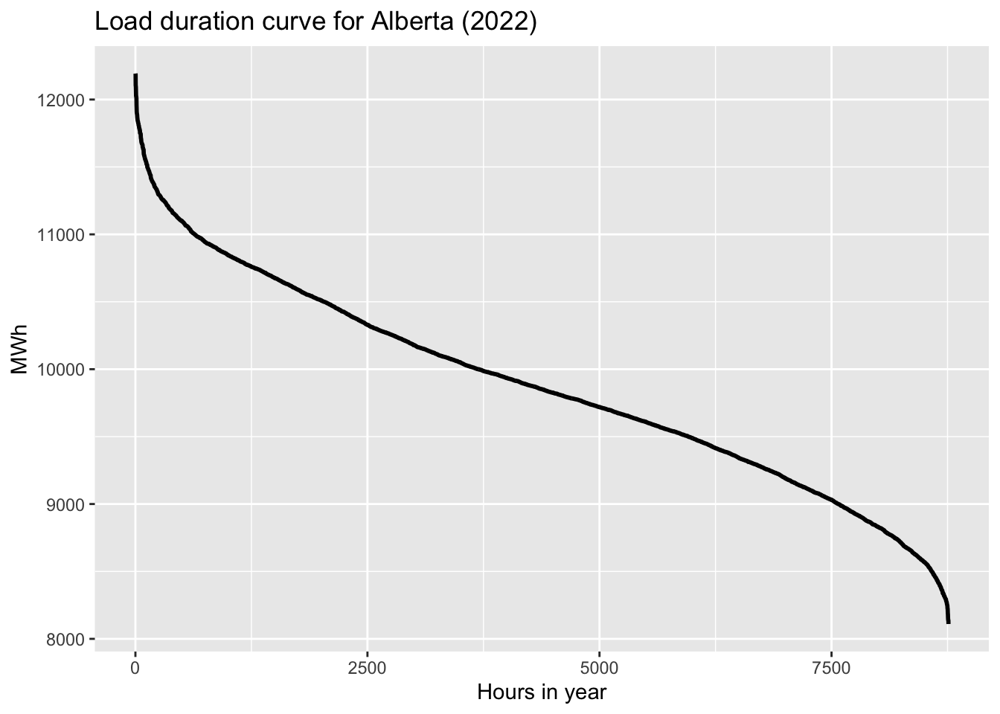
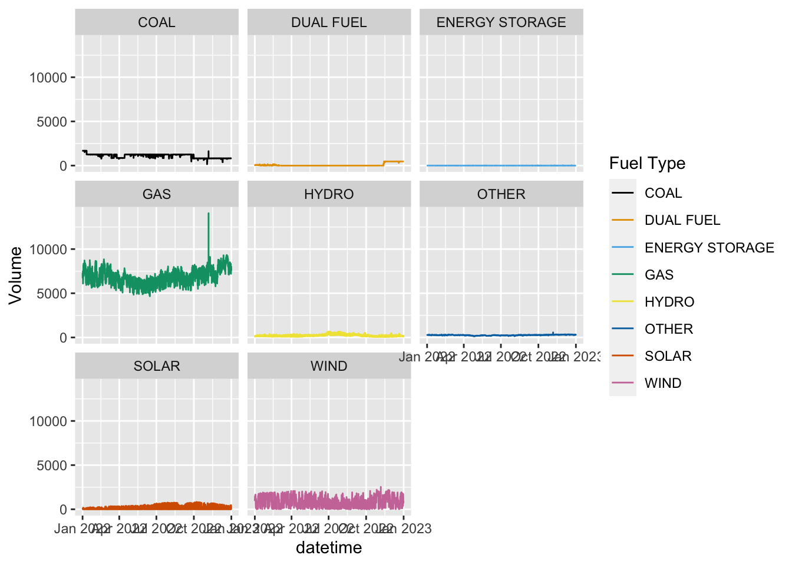
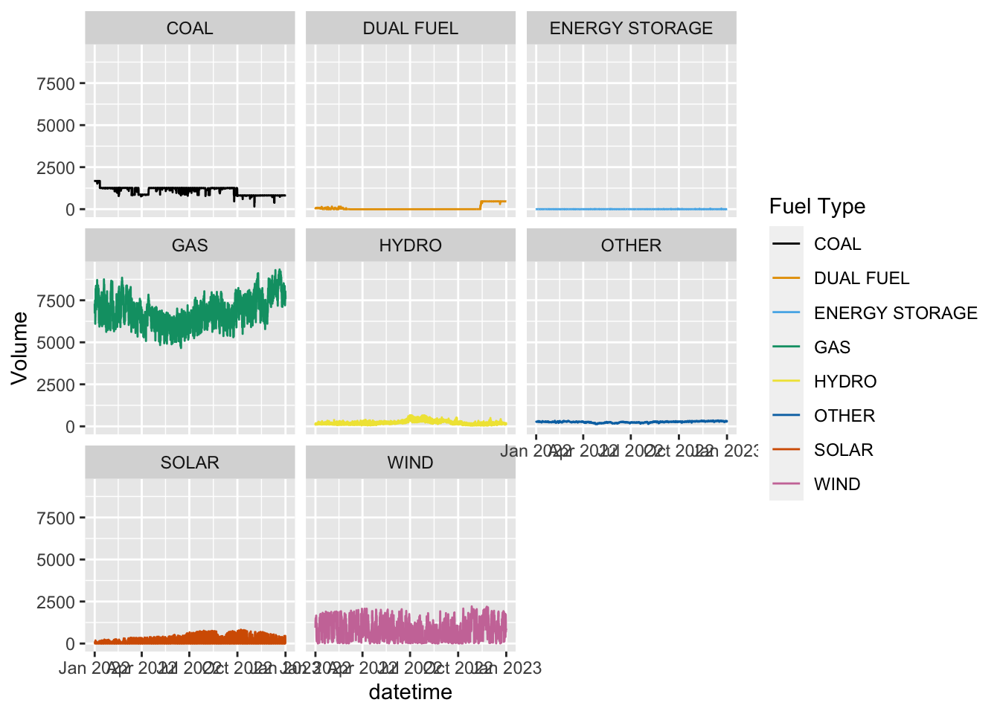
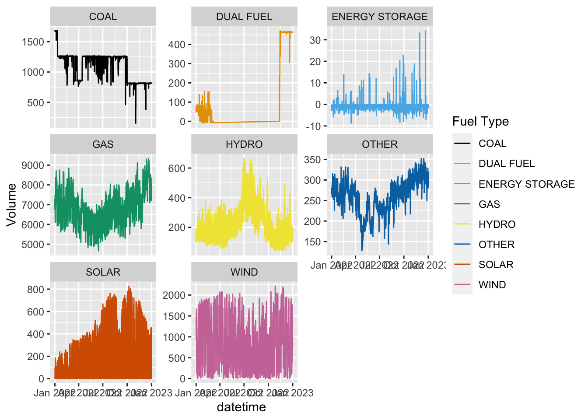
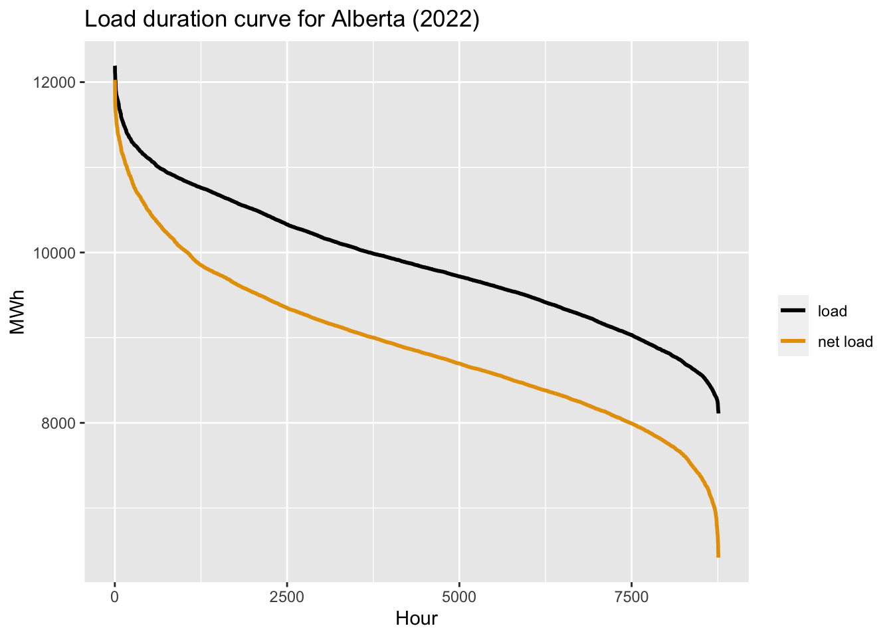
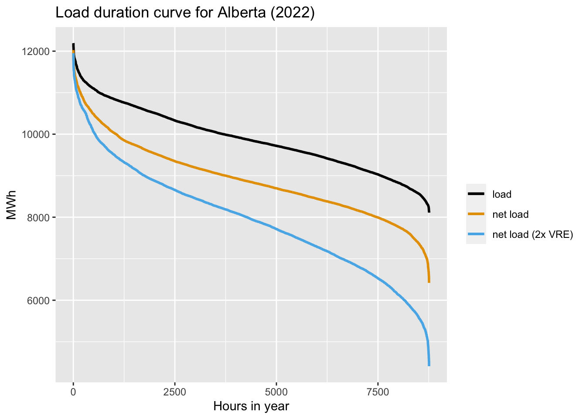
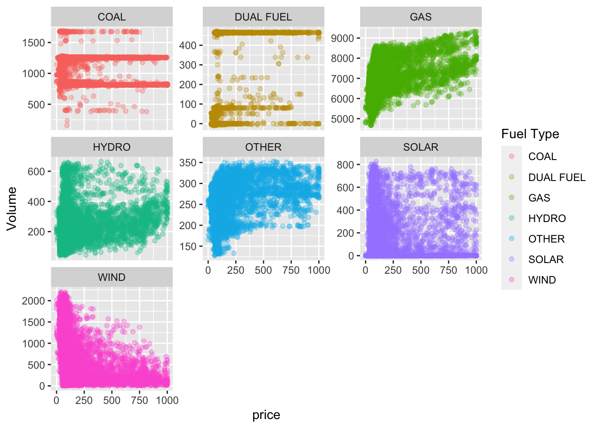
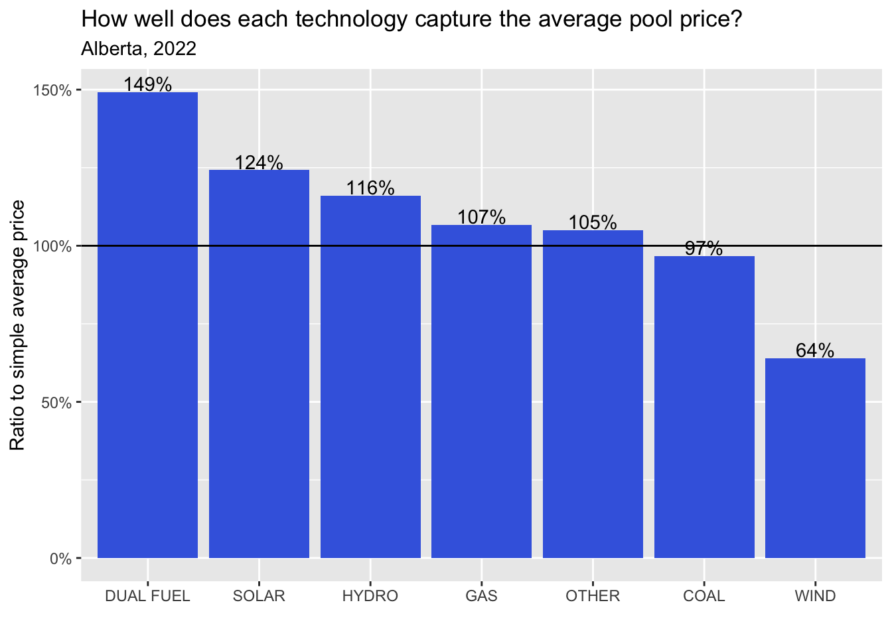

Hello again class!
For your second data assignment, you will do three tasks:
You can do this in either a) an rMarkdown script like this (which includes both code and output) or b) using RStudio’s script to write your code in a .r file and save your plots
Start by pulling in 1 year of Alberta Internal Load data, from Jan 1, 2022 to Dec 31, 2022. I’m going to use the API, but you can also pull this using the aeso’s market and system reporting historical pool price report. Up to you!
library(tidyverse)
library(httr)
library(jsonlite)
library(lubridate)
library(ggthemes)
#aeso_key = "enter_your_key_here" (make sure to uncomment and run this line with your key!)
get_AESO_load <- function(start_date,end_date,aeso_key){
data <- GET(url="https://api.aeso.ca/report/v1/load/albertaInternalLoad",
add_headers("X-API-Key" = aeso_key),
query = list(
startDate = format(start_date, "%Y-%m-%d"),
endDate = format(end_date, "%Y-%m-%d"),
contentType = "application/json"))
data <- as.data.frame(fromJSON(rawToChar(data$content)))
return(data)
}
df.load <- get_AESO_load(as.Date("2022-01-01"),as.Date("2022-12-31"),aeso_key)
df.load <- df.load %>%
select(datetime=return.Actual.Forecast.Report.begin_datetime_mpt,
load=return.Actual.Forecast.Report.alberta_internal_load) %>%
mutate(datetime=ymd_hm(datetime),
load=as.numeric(load))
head(df.load)## datetime load
## 1 2022-01-01 00:00:00 10746
## 2 2022-01-01 01:00:00 10618
## 3 2022-01-01 02:00:00 10499
## 4 2022-01-01 03:00:00 10451
## 5 2022-01-01 04:00:00 10408
## 6 2022-01-01 05:00:00 10401Great! That looks good. You should have a dataframe
(df.load) with 8760 rows of datetime and load data.
Now I want you to do four things with these data:
Plot average monthly load for 2022. Include data labels
(geom_text) in your plots.
Plot average hourly load for 2022. i.e. this plot should have 24 hours along the x axis and the average load for each hour in 2022 along the y axis.
Now do this again (average hourly load) but this time
group_by(month) first and plot the average hourly load for
each month in 2022 using facet_wrap(~month).
Order your data frame from highest to lowest load value. Create a new variable that runs from 1 to 8760 denoting the ranking of each hours load (i.e. highest load in the year should have a 1 value, lowest should have a value of 8760). Plot the load duration curve for 2022 with the load on the y-axis and the hour order variable (highest to lowest) on the x-axis.
When done, part (d) should look like this:

For this task, I want you to calculate the net load for each hour, i.e. load minus variable wind and solar generation. To do so, we will need to pull in solar and wind generation data. Thankfully, the AESO just started posting historical generation data by plant and fuel type on their website: [https://aeso.ca/market/market-and-system-reporting/data-requests/historical-generation-data/].
Grab the two files with 2022 data. You’ll need to download the zip files, then unzip each to get csv files. Save it in the same folder as your R script file and then you should be able to import like i’ve done here:
data1 <- readr::read_csv("CSD Generation (Hourly) - 2022-01 to 2022-06.csv")
data2 <- readr::read_csv("CSD Generation (Hourly) - 2022-07 to 2022-12.csv")
data <- bind_rows(data1,data2)
head(data)## # A tibble: 6 × 12
## `Date (MST)` `Date (MPT)` `Asset Short Name` `Asset Name`
## <dttm> <dttm> <chr> <chr>
## 1 2022-01-01 00:00:00 2022-01-01 00:00:00 AFG1 AFG1 APF Athabasca
## 2 2022-01-01 01:00:00 2022-01-01 01:00:00 AFG1 AFG1 APF Athabasca
## 3 2022-01-01 02:00:00 2022-01-01 02:00:00 AFG1 AFG1 APF Athabasca
## 4 2022-01-01 03:00:00 2022-01-01 03:00:00 AFG1 AFG1 APF Athabasca
## 5 2022-01-01 04:00:00 2022-01-01 04:00:00 AFG1 AFG1 APF Athabasca
## 6 2022-01-01 05:00:00 2022-01-01 05:00:00 AFG1 AFG1 APF Athabasca
## # … with 8 more variables: `Asset Grouping` <chr>, Volume <dbl>,
## # `Maximum Capability` <dbl>, `System Capability` <dbl>, `Fuel Type` <chr>,
## # `Sub Fuel Type` <chr>, `Planning Area` <dbl>, Region <chr>Let’s clean up this file by renaming some variables and rolling up the plant-level data to just give us the sum of volume (MW) by fuel type in each hour:
df.gen <- data %>%
rename(datetime=`Date (MPT)`) %>%
group_by(datetime,`Fuel Type`) %>%
summarise(Volume=sum(Volume))
head(df.gen)## # A tibble: 6 × 3
## # Groups: datetime [1]
## datetime `Fuel Type` Volume
## <dttm> <chr> <dbl>
## 1 2022-01-01 00:00:00 COAL 1680.
## 2 2022-01-01 00:00:00 DUAL FUEL 64.7
## 3 2022-01-01 00:00:00 ENERGY STORAGE -1.12
## 4 2022-01-01 00:00:00 GAS 7296.
## 5 2022-01-01 00:00:00 HYDRO 111.
## 6 2022-01-01 00:00:00 OTHER 281.unique(df.gen$`Fuel Type`)## [1] "COAL" "DUAL FUEL" "ENERGY STORAGE" "GAS"
## [5] "HYDRO" "OTHER" "SOLAR" "WIND"Since we have these data, let’s start by producing a quick chart of hourly generation by fuel type like this:
ggplot(df.gen, aes(datetime,Volume,color=`Fuel Type`))+
facet_wrap(~`Fuel Type`)+
geom_line()+
scale_color_colorblind()
I see some weirdness in the data. That spike in GAS to 14000 MW doesn’t make sense. It looks like the AESO has an issue on Nov 6 at 1am. Let’s delete that hour and replot:
df.gen <- df.gen %>%
filter(datetime!=ymd_hm("2022-11-06 01:00"))
ggplot(df.gen, aes(datetime,Volume,color=`Fuel Type`))+
facet_wrap(~`Fuel Type`)+
geom_line()+
scale_color_colorblind()
Better. To see the variation better we could let the scales differ for each facet. Note: this needs to be done judiciously, as you lose the perspective on different generation levels across fuel types. This should only be done if the focus is on shape or variation, not levels.
ggplot(df.gen, aes(datetime,Volume,color=`Fuel Type`))+
facet_wrap(~`Fuel Type`,scales="free_y")+
geom_line()+
scale_color_colorblind()
Ok! Now we’re ready for the task at hand:
load minus renewables for each hour.
You’ll also need to create 2 order variables: one for the regular load
values and another for the net load. I’ll let you figure that out, but
your final ggplot should look something like this, where the aesthetics
are in the geom_line() call:ggplot(df.duration.net)+
geom_line(aes(x=order,y=load,color="load"),size=1)+
geom_line(aes(x=net.order,y=net.load,color="net load"),size=1)+
scale_color_colorblind(name="")+
labs(y="MWh",x="Hour",
title="Load duration curve for Alberta (2022)")
Your plot should now look like this:
ggplot(df.duration.net)+
geom_line(aes(x=order,y=load,color="load"),size=1)+
geom_line(aes(x=net.order,y=net.load,color="net load"),size=1)+
geom_line(aes(x=net.order.2x,y=net.load.2x,color="net load (2x VRE)"),size=1)+
scale_color_colorblind(name="")+
labs(y="MWh",x="Hours in year",
title="Load duration curve for Alberta (2022)")
For this final task, I want you to explore the relationship between hourly generation and hourly prices, by fuel type.
To do this task, we will need to dig back to our assignment 1 and pull in 2022’s hourly prices. You can do this either using the API, or getting it manually from the AESO’s market reporting page.
get_AESO_prices <- function(start_date,end_date,aeso_key){
data <- GET(url="https://api.aeso.ca/report/v1.1/price/poolPrice",
add_headers("X-API-Key" = aeso_key),
query = list(
startDate = format(start_date, "%Y-%m-%d"),
endDate = format(end_date, "%Y-%m-%d"),
contentType = "application/json"))
data <- as.data.frame(fromJSON(rawToChar(data$content)))
return(data)
}
df.price <- get_AESO_prices(as.Date("2022-01-01"),as.Date("2022-12-31"),aeso_key)
df.price <- df.price %>%
select(datetime=return.Pool.Price.Report.begin_datetime_mpt,
price=return.Pool.Price.Report.pool_price) %>%
mutate(datetime=ymd_hm(datetime),
price=as.numeric(price))Once that is done, merge the price data with the gen data. We will also get rid of the ENERGY STORAGE fuel type as it operates primarily in the ancillary service markets right now and makes the data a little messy for our purposes…
df.price.gen <- df.price %>%
left_join(df.gen, by="datetime") %>%
filter(`Fuel Type`!="ENERGY STORAGE")Now for your tasks:
facet_wrap(~Fuel
Type)). It should look something like this. I’ve chosen to
let the scales differ so you can see the relationships better.

Good luck!